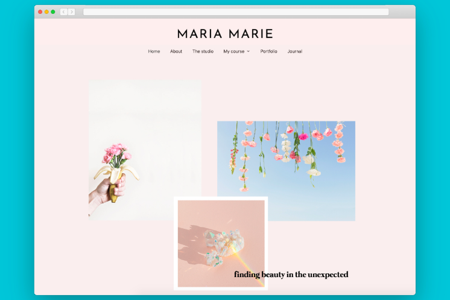

35 Best Graphic Design Portfolio Examples + Tips To Build Your Own

Putting together a kick-ass graphic design portfolio isn’t just something you need to worry about when you’re a student. You need to think about maintaining, improving and evolving your portfolio throughout your
graphic design career.
We all know a winning portfolio is vital when you’re going for a new job. But that’s not all. You might be called in at a moment’s notice to chat
with your art director to discuss a promotion opportunity or a hot new project you didn’t even know about. And you don’t want to be caught
short by a graphic design portfolio that’s not all it could be.
List of graphic design portfolio examples
Kate Moross

Lotta Nieminen

Maria Vazquez

Want to win some amazing prizes and stay in the loop with
all things Tarento? Sign up to our newsletter to
automatically go in the draw.
Kickstart your creative
career at Tarento.
Our Contributers